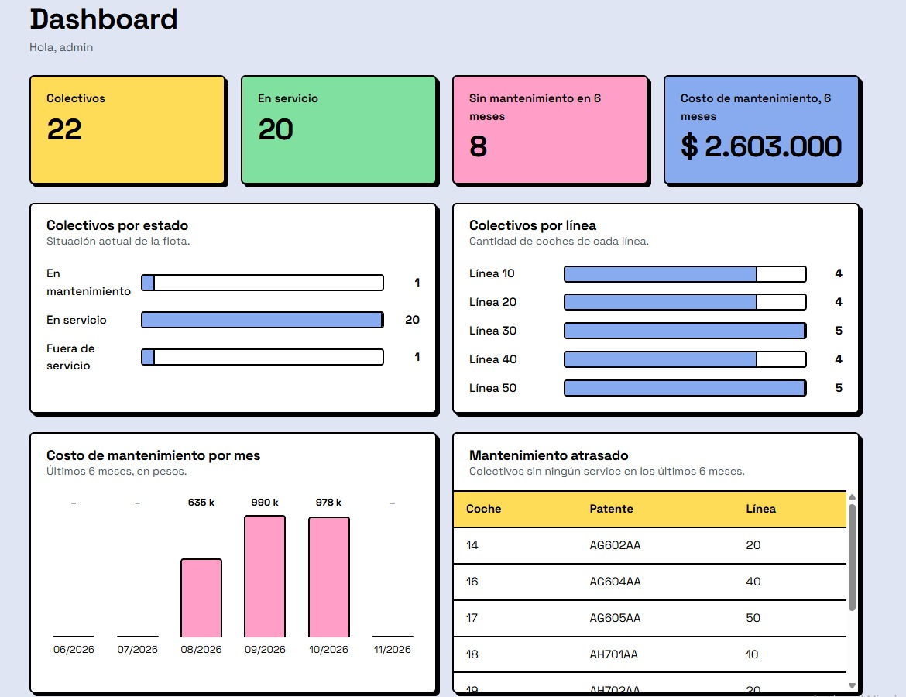
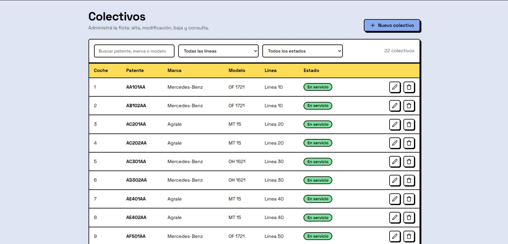

Una flota de colectivos,
un solo panel.
Transporte Urbano es un sistema web para administrar la flota de una empresa de colectivos: qué coches tiene, en qué estado está cada uno y cuándo y cuánto costó cada service.
El problema que resuelve
Una empresa con muchos colectivos necesita saber, en cualquier momento, con qué cuenta para salir a la calle.
Sin un sistema
- Los datos de la flota viven en planillas sueltas.
- No se sabe qué coches llevan meses sin revisión.
- Los costos de mantenimiento se suman a mano.
Con Transporte Urbano
- Un listado único de colectivos con su línea y su estado.
- Cada service queda registrado con su tipo, fecha y costo.
- Un dashboard marca qué coches están atrasados.
Qué hace
Cuatro piezas que trabajan juntas.
Flota
Alta, baja, modificación y consulta de colectivos, con filtros por línea y estado.
Mantenimientos
Registro de cada service: coche, tipo de trabajo, fecha, descripción y costo.
Dashboard
Indicadores de la flota, costos por mes y coches con el mantenimiento atrasado.
Acceso seguro
Inicio de sesión con token JWT. Los administradores gestionan; los visitantes conocen el proyecto.
Un vistazo
Así se ve el panel de administración.


Cómo está hecho
Cada pedido recorre las mismas capas: el controller lo recibe, el service aplica las reglas de negocio y el repository habla con la base.
Quiénes somos.
Somos el grupo que diseñó y desarrolló este sistema como Trabajo Práctico Integrador.

Sobre el trabajo
Los datos de la cursada y el link del proyecto.